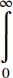

The MathML <munderover> element is used to attach accents or limits both under and over an expression.
It uses the following syntax: <munderover> base underscript overscript </munderover>
true, the overscript is an accent, which is drawn closer to the base expression.false (default value), the overscript is a limit over the base expression.true, the underscript is an accent, which is drawn closer to the base expression.false (default value), the underscript is a limit under the base expression.left, center, and right.text-align instead.displaystylefalse, a more compact layout is used to display formulas. The main effect is that larger versions of operators are displayed, when displaystyle is set to true. See also movablelimits on {{ MathMLElement("mo") }}.#rgb, #rrggbb and HTML color names.#rgb, #rrggbb and HTML color names.Sample rendering: 
Rendering in your browser:
<math displaystyle="true">
<munderover >
<mo> ∫ <!--INTEGRAL--> </mo>
<mn> 0 </mn>
<mi> ∞ <!--INFINITY--> </mi>
</munderover>
</math>
{{Specifications}}
{{Compat}}